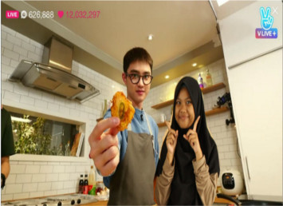
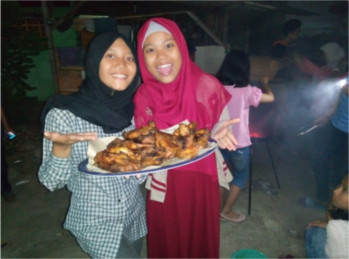
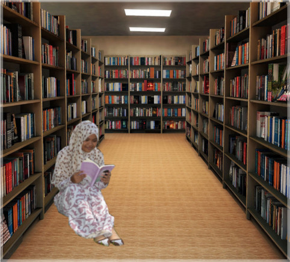
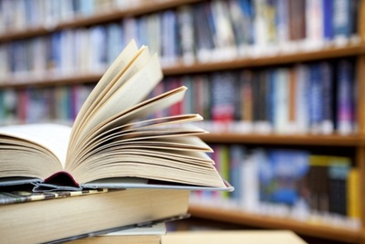

All About Me
My Profile
Haii.. Perkenalkan nama saya Rifdah Nur Syifa, kalian bisa memanggil saya Rifdah. Saya lahir di Jakarta pada tanggal 27 Oktober 2001. And this year I will 17th years old yeayy.. Akhirnya udah bisa buat KTP..Saya adalah anak kedua dari tiga bersaudara saya memiliki satu kakak laki-laki dan satu adik laki-laki.. Yaa, saya adalah anak perempuan satu-satunya dalam keluarga saya. Dan saya memiliki orangtua yang sangat selalu mendukung saya. Saya berasal dari Jakarta but saat ini saya tinggal di Bogor. Why?? Karena saat ini saya bersekolah di SMAKBO, kalian tau SMAKBO kan?? Iyaa.. sekolah yang jurusannya kimia itu loh. Karena saya disini ngekos saya harus pintar menjaga kesehatan, oleh sebab itu saya harus makan makanan yang bergizi agar tidak gampang sakit. Saya tipe orang yang suka makan loh, salah satu makanan kesukaan saya adalah nasi goreng, standar sih mungkin semua orang suka dengan nasi goreng, betul?? Ngomong-ngomong soal kesukaan, mau ngasih tau nih apa aja yang saya sukai dimulai dari warna, warna kesukaan saya adalah hijau karena hijau itu seperti warna alam menyejukkan gitu deh hehehe.. Saya juga suka novel jadi kalau kalian mau kasih hadiah ke saya novel aja boleh kok?? Hehehe bercanda kok..Selain itu saya juga suka menonton drama korea dan berselfie (maklumlah remaja sekarang). Kalau ada hal yang disukai pasti ada juga kan hal yang tidak disukai seperti jalan-jalan kalau orang lain menyukai traveling tapi tidak dengan saya. saya lebih memilih bersantai dirumah sambil membaca novel daripada harus keluar. Ya begitulah, saya sedikit mageran untuk keluar rumah. Untuk mengetahui saya lebih dekat lagi, kalian bisa scroll down..
My School..
Sekarang saya bersekolah di SMK-SMAK Bogor, saya berada dikelas XI. Yaa, sekolah yang 4 tahun itu yang katanya superrr sibuxx, entah sibuk ngelapsus ataupun ngerjain tugas lain. Tapi di SMAKBO seru kok, kapan lagi coba kita bermain dengan pereaksi bahkan di Lab Mikrobiologinya kita bisa melihat bakteri-bakteri, bentuknya lucu deh hehe.. Di SMAKBO kita belajar mengenai bagaimana menganalisis suatu sampel. Selama saya di SMAKBO saya banyak belajar bagaimana cara kita bekerja dengan rapih dan hati-hati, karena kita bekerja dengan suatu bahan pereaksi. Jika kita tidak bekerja dengan hati-hati maka akan berdampak kepada kita dan orang lain. Nahh.. tadi itu sedikit cerita saya selama di SMAKBO. Sebelum saya bersekolah di SMK-SMAK Bogor saya pernah bersekolah di :
(1)TK Pembina. Tahun 2006-2007
(2)SDN Batu Ampar 01 Pagi. Tahun 2007-2013
(3)SMP 150 Jakarta Timur. Tahun 2013-2015
My Hobby..
 Memasak
Saya itu tipe orang yang suka makan karena saya suka makan maka hobi yang yang mendukungnya ialah memasa. Yaa..Memasak adalah hobi saya yang paling menyenangkan. Kenapa saya mengatakan seperti itu? Karena pada saat di dapur sama saja seperti di dalam laboratorium yaitu kita bisa bereksperimen sendiri hasil percobaan kita. Diibaratkan bahan-bahan makanan itu seperti pereaksi apabila kita salah mencampurkan pereaksi maka hasilnya tidak akan jadi. Ya, seperti memasak juga, apabila kita tidak tepat memasukkan bumbu maka rasanya tidak akan enak bahkan bisa jadi rasanya akan aneh. Di dapur saya bisa menghabiskan beberapa jam untuk membuat 1 ataupun 2 jenis makanan.. Yaa, mungkin kalian berpikir kenapa bisa selama itu? Selain saya menghayati pada saat memasak #azzeekk>_< saya pun sedang belajar untuk membuat masakan ala saya sendiri wkwk.. Untuk jenis makanan yang pernah saya buat belum terlalu banyak hanya masakan rumahan untuk keluarga dan kue bolu..
Membaca
MEMBACA. Hobi yang dapat membuat saya betah di kamar tanpa minum ataupun makan dan keluar kamarpun jika orangtua saya memanggil atapun sudah waktunya shalat. Saya suka membaca karena dengan membaca kita jadi banyak tahu tentang segala hal, kita dapat mengetahui banyak hal tidak harus dari buku pengetahuan. Kita dapat mengetahui banyak hal dari novel-novel, banyak penulis-penulis cerdas yang memasukkan pengetahuan dalam novelnya, sehingga kita tidak hanya membaca karyanya namun mendapat pengetahuan. Seperti novel-novel Tere Liye, entah mengapa saya sangat menyukai karyanya, diantaranya novel Hujan, Tentang Kamu dan Sunset bersama Rossie. Jika diantara kalian sudah pernah membaca ketiga novel tersebut pasti kalian setuju dengan pendapat saya bahwa ketiga novel tersebut memberikan pelajaran yang dapat kita ambil yaitu bagaimana cara mengikhlaskan sesuatu. Banyak-banyaklah membaca karena dengan membaca wawasan kalian semakin luas karena buku adalah jendela dunia..
